How are lines in \(\R^3\) similar to and different from lines in \(\R^2\text{?}\)
What is the role that vectors play in representing equations of lines, particularly in \(\R^3\text{?}\)
How can we think of a plane as a set of points determined by a point and a vector?
How do we find the equation of a plane through three given non-collinear points?
In single variable calculus, we learn that a differentiable function is locally linear. In other words, if we zoom in on the graph of a differentiable function at a point, the graph looks like the tangent line to the function at that point. Linear functions played important roles in single variable calculus, useful in approximating differentiable functions, in approximating roots of functions (see Newton’s Method), and approximating solutions to first order differential equations (see Euler’s Method). In multivariable calculus, we will soon study curves in space; differentiable curves turn out to be locally linear as well. In addition, as we study functions of two variables, we will see that such a function is locally linear at a point if the surface defined by the function looks like a plane (the tangent plane) as we zoom in on the graph.
Consequently, it is important for us to understand both lines and planes in space, as these define the linear functions in \(\R^2\) and \(\R^3\text{.}\) (Recall that a function is linear if it is a polynomial function whose terms all have degree less than or equal to 1. For example, \(x\) defines a single variable linear function and \(x+y\) a two variable linear function, but \(xy\) is not linear since it has degree two, the sum of the degress of its factors.) We begin our work by considering some familiar ideas in \(\R^2\) but from a new perspective.
Preview Activity9.5.1.
We are familiar with equations of lines in the plane in the form \(y = mx+b\text{,}\) where \(m\) is the slope of the line and \((0,b)\) is the \(y\)-intercept. In this activity, we explore a more flexible way of representing lines that we can use not only in the plane, but in higher dimensions as well.
To begin, consider the line through the point \((2,-1)\) with slope \(\frac{2}{3}\) as shown in Figure 9.5.1.
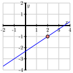
Figure9.5.1.The line through \((2,-1)\) with slope \(\frac{2}{3}\text{.}\)
Suppose we increase \(x\) by 1 from the point \((2,-1)\text{.}\) How does the \(y\)-value change? What is the point on the line with \(x\)-coordinate \(3\text{?}\)
Suppose we decrease \(x\) by 3.25 from the point \((2,-1)\text{.}\) How does the \(y\)-value change? What is the point on the line with \(x\)-coordinate \(-1.25\text{?}\)
Now, suppose we increase \(x\) by some arbitrary value \(3t\) from the point \((2,-1)\text{.}\) How does the \(y\)-value change? What is the point on the line with \(x\)-coordinate \(2+3t\text{?}\)
Observe that the slope of the line is related to any vector whose \(y\)-component divided by the \(x\)-component is the slope of the line. For the line in this exercise, we might use the vector \(\langle 3,2 \rangle\text{,}\) which describes the direction of the line. Explain why the terminal points of the vectors \(\vr(t)\text{,}\) where
trace out the graph of the line through the point \((2,-1)\) with slope \(\frac{2}{3}\text{.}\)
Now we extend this vector approach to \(\R^3\) and consider a second example. Let \(\mathcal{L}\) be the line in \(\R^3\) through the point \((1,0,2)\) in the direction of the vector \(\langle 2, -1, 4 \rangle\text{.}\) Find the coordinates of three distinct points on line \(\mathcal{L}\text{.}\) Explain your thinking.
whose terminal points trace out the line \(\mathcal{L}\) that is described in (e). That is, you should be able to locate any point on the line by determining a corresponding value of \(t\text{.}\)
Subsection9.5.1Lines in Space
In two-dimensional space, a non-vertical line is defined to be the set of points satisfying the equation
\begin{equation*}
y = mx + b,
\end{equation*}
for some constants \(m\) and \(b\text{.}\) The value of \(m\) (the slope) tells us how the dependent variable changes for every one unit increase in the independent variable, while the point \((0,b)\) is the \(y\)-intercept and anchors the line to a location on the \(y\)-axis. Alternatively, we can think of the slope as being related to the vector \(\langle 1, m \rangle\text{,}\) which tells us the direction of the line, as shown on the left in Figure 9.5.2. Thus, we can identify a line in space by fixing a point \(P\) and a direction \(\vv\text{,}\) as shown on the right. Since we also have vectors in space to provide direction, this same idea of a point and a direction determining a line works in \(\R^n\) for any \(n\text{.}\)
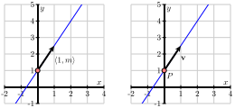
Figure9.5.2.A vector description of a line
Definition9.5.3.
A line in space is the set of terminal points of vectors emanating from a given point \(P\) that are parallel to a fixed vector \(\vv\text{.}\)
The fixed vector \(\vv\) in the definition is called a direction vector for the line. As we saw in Preview Activity 9.5.1, to find an equation for a line through point \(P\) in the direction of vector \(\vv\text{,}\) observe that any vector parallel to \(\vv\) will have the form \(t \vv\) for some scalar \(t\text{.}\) So, any vector emanating from the point \(P\) in a direction parallel to the vector \(\vv\) will be of the form
for some scalar \(t\) (where \(O\) is the origin).
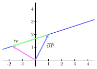
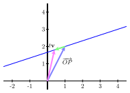
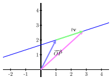
Figure9.5.4.A line in 2-space.
Figure 9.5.4 presents three images of a line in two-space in which we can identify the vector \(\overrightarrow{OP}\) and the vector \(t \vv\) as in Equation (9.5.1). Here, \(\overrightarrow{OP}\) is the fixed vector shown in blue, while the direction vector \(\vv\) is the vector parallel to the vector shown in green (that is, the green vector represents \(t\vv\text{,}\) and the line is traced out by the terminal points of the magenta vector). In other words, the tips (terminal points) of the magenta vectors (the vectors of the form \(\overrightarrow{OP} + t\vv\)) trace out the line as \(t\) changes.
In particular, the terminal points of the vectors of the form in (9.5.1) define a linear function \(\vr\) in space of the following form, which is valid in any dimension.
The vector form of a line.
The vector form of a line through the point \(P\) in the direction of the vector \(\vv\) is
where \(\vr_0\) is the position vector \(\overrightarrow{OP}\) from the origin to the point \(P\text{.}\)
Of course, it is common to represent lines in the plane using the slope-intercept equation \(y=mx
+ b\text{.}\) The vector form of the line, described above, is an alternative way to represent lines that has the following two advantages. First, in two dimensions, we are able to represent vertical lines, whose slope \(m\) is not defined, using a vertical direction vector, such as \(\vv=\langle 0, 1\rangle\text{.}\) Second, this description of lines works in any dimension even though there is no concept of the slope of a line in more than two dimensions.
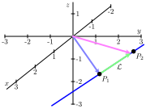
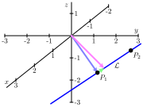
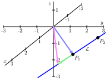
Figure9.5.5.A line in 3-space.
Activity9.5.2.
Let \(P_1 = (1,2,-1)\) and \(P_2 = (-2,1,-2)\text{.}\) Let \(\mathcal{L}\) be the line in \(\R^3\) through \(P_1\) and \(P_2\text{,}\) and note that three snapshots of this line are shown in Figure 9.5.5.
Find a direction vector for the line \(\mathcal{L}\text{.}\)
Find a vector equation of \(\mathcal{L}\) in the form \(\vr(t) = \vr_0 + t\vv\text{.}\)
Consider the vector equation \(\vs(t) = \langle -5, 0, -3 \rangle + t \langle 6, 2, 2 \rangle.\) What is the direction of the line given by \(\vs(t)\text{?}\) Is this new line parallel to line \(\mathcal{L}\text{?}\)
Do \(\vr(t)\) and \(\vs(t)\) represent the same line, \(\mathcal{L}\text{?}\) Explain.
Subsection9.5.2The Parametric Equations of a Line
The vector form of a line, \(\vr(t) = \vr_0 + t\vv\) in Equation (9.5.2), describes a line as the set of terminal points of the vectors \(\vr(t)\text{.}\) If we write this in terms of components letting
which describe the coordinates of the points on the line. The variable \(t\) represents an arbitrary scalar and is called a parameter. In particular, we use the following language.
The parametric equations of a line.
The parametric equations for a line through the point \(P = (x_0,
y_0, z_0)\) in the direction of the vector \(\vv = \langle a,b,c
\rangle\) are
Notice that there are many different parametric equations for the same line. For example, choosing another point \(P\) on the line or another direction vector \(\vv\) produces another set of parametric equations. It is sometimes useful to think of \(t\) as a time parameter and the parametric equations as telling us where we are on the line at each time. In this way, the parametric equations describe a particular walk taken along the line; there are, of course, many possible ways to walk along a line.
Activity9.5.3.
Let \(P_1 = (1,2,-1)\) and \(P_2 = (-2,1,-2)\text{,}\) and let \(\mathcal{L}\) be the line in \(\R^3\) through \(P_1\) and \(P_2\text{,}\) which is the same line as in Activity 9.5.2.
Find parametric equations of the line \(\mathcal{L}\text{.}\)
Does the point \((1, 2, 1)\) lie on \(\mathcal{L}\text{?}\) If so, what value of \(t\) results in this point?
Consider another line, \(\mathcal{K}\text{,}\) whose parametric equations are
What is the direction of the line \(\mathcal{K}\text{?}\)
Do the lines \(\mathcal{L}\) and \(\mathcal{K}\) intersect? If so, provide the point of intersection and the \(t\) and \(s\) values, respectively, that result in the point. If not, explain why.
Subsection9.5.3Planes in Space
Now that we have a way of describing lines, we would like to develop a means of describing planes in three dimensions. We studied the coordinate planes and planes parallel to them in Section 9.1. Each of those planes had one of the variables \(x\text{,}\)\(y\text{,}\) or \(z\) equal to a constant. We can note that any vector in a plane with \(x\) constant is orthogonal to the vector \(\langle 1,0,0 \rangle\text{,}\) any vector in a plane with \(y\) constant is orthogonal to the vector \(\langle 0,1,0 \rangle\text{,}\) and any vector in a plane with \(z\) constant is orthogonal to the vector \(\langle 0,0,1 \rangle\text{.}\) This idea works in general to define a plane.
Definition9.5.6.
A plane \(p\) in space is the set of all terminal points of vectors emanating from a given point \(P_0\) perpendicular to a fixed vector \(\vn\text{,}\) as shown in Figure 9.5.7.
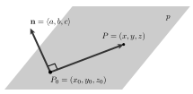
Figure9.5.7.A point \(P_0\) on a plane \(p\) with a normal vector \(\vn\)
The definition allows us to find the equation of a plane. Assume that \(\vn=\langle a,b,c\rangle\text{,}\)\(P_0 =
(x_0, y_0, z_0)\text{,}\) and that \(P=(x,y,z)\) is an arbitrary point on the plane. Since the vector \(\overrightarrow{P_0P}\) lies in the plane, it must be perpendicular to \(\vn\text{.}\) This means that
The vector equation of the plane with normal vector \(\vn =\langle a,b,c \rangle\) containing the points \(P_0 = (x_0, y_0,z_0)\) and \(P = (x,y,z)\) is
\begin{equation*}
ax + by + cz = ax_0+by_0+cz_0.
\end{equation*}
That is, we may write an equation of a plane as \(ax+by+cz = d\) where \(d = \vn\cdot\langle x_0,y_0,z_0\rangle\text{.}\)
For instance, if we would like to describe the plane passing through the point \(P_0=(4, -2,1)\) and perpendicular to the vector \(\vn =
\langle 1, 2, 1 \rangle\text{,}\) we have
Notice that the coefficients of \(x\text{,}\)\(y\text{,}\) and \(z\) in this description give a vector perpendicular to the plane. For instance, if we are presented with the plane
\begin{equation*}
-2x + y - 3z = 4,
\end{equation*}
we know that \(\vn = \langle -2, 1, -3\rangle\) is a vector perpendicular to the plane.
Activity9.5.4.
Write a scalar equation of the plane \(p_1\) passing through the point \((0,
2, 4)\) and perpendicular to the vector \(\vn=\langle 2, -1,
1\rangle\text{.}\)
Is the point \((2, 0, 2)\) on the plane \(p_1\text{?}\)
Write a scalar equation of the plane \(p_2\) that is parallel to \(p_1\) and passing through the point \((3, 0, 4)\text{.}\) (Hint: Compare normal vectors of the planes.)
Write a parametric description of the line \(l\) passing through the point \((2,0,2)\) and perpendicular to the plane \(p_3\) described by the equation \(x+2y-2z = 7\text{.}\)
Find the point at which \(l\) intersects the plane \(p_3\text{.}\)
Just as two distinct points in space determine a line, three non-collinear points in space determine a plane. Consider three points \(P_0\text{,}\)\(P_1\text{,}\) and \(P_2\) in space, not all lying on the same line as shown in Figure 9.5.8.
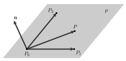
Figure9.5.8.A plane determined by three points \(P_0\text{,}\)\(P_1\text{,}\) and \(P_2\)
Observe that the vectors \(\overrightarrow{P_0P_1}\) and \(\overrightarrow{P_0P_2}\) both lie in the plane \(p\text{.}\) If we form their cross-product
we obtain a normal vector to the plane \(p\text{.}\) Therefore, if \(P\) is any other point on \(p\text{,}\) it then follows that \(\overrightarrow{P_0P}\) will be perpendicular to \(\vn\text{,}\) and we have, as before, the equation
Let \(P_0 = (1,2,-1)\text{,}\)\(P_1 = (1, 0 ,-1)\text{,}\) and \(P_2 = (0,1,3)\) and let \(p\) be the plane containing \(P_0\text{,}\)\(P_1\text{,}\) and \(P_2\text{.}\)
Determine the components of the vectors \(\overrightarrow{P_0P_1}\) and \(\overrightarrow{P_0P_2}\text{.}\)
Find a normal vector \(\vn\) to the plane \(p\text{.}\)
Find a scalar equation of the plane \(p\text{.}\)
Consider a second plane, \(q\text{,}\) with scalar equation \(-3(x-1) + 4(y+3) + 2(z-5)=0\text{.}\) Find two different points on plane \(q\text{,}\) as well as a vector \(\vm\) that is normal to \(q\text{.}\)
The angle between two planes is the acute angle between their respective normal vectors. What is the angle between planes \(p\) and \(q\text{?}\)
Subsection9.5.4Summary
While lines in \(\R^3\) do not have a slope, like lines in \(\R^2\) they can be characterized by a point and a direction vector. Indeed, we define a line in space to be the set of terminal points of vectors emanating from a given point that are parallel to a fixed vector.
Vectors play a critical role in representing the equation of a line. In particular, the terminal points of the vector \(\vr(t) = \vr_0 + t\vv\) define a linear function \(\vr\) in space through the terminal point of the vector \(\vr_0\) in the direction of the vector \(\vv\text{,}\) tracing out a line in space.
A plane in space is the set of all terminal points of vectors emanating from a given point perpendicular to a fixed vector.
If \(P_1\text{,}\)\(P_2\text{,}\) and \(P_3\) are non-collinear points in space, the vectors \(\overrightarrow{P_1P_2}\) and and \(\overrightarrow{P_1P_3}\) are vectors in the plane and the vector \(\vn = \overrightarrow{P_1P_2} \times \overrightarrow{P_1P_3}\) is a normal vector to the plane. So any point \(P\) in the plane satisfies the equation \(\overrightarrow{PP_1} \cdot \vn = 0\text{.}\) If we let \(P = (x,y,z)\text{,}\)\(\vn = \langle a,b,c \rangle\) be the normal vector, and \(P_1 = (x_0,y_0,z_0)\text{,}\) we can also represent the plane with the equation
A bicycle pedal is pushed straight downwards by a foot with a 36 Newton force. The shaft of the pedal is 20 cm long. If the shaft is \(\pi / 5\) radians past horizontal, what is the magnitude of the torque about the point where the shaft is attached to the bicycle? Nm
2.
Rewrite the vector equation \(\mathbf{r} (t) =
(3 + 3 t) \mathbf{i} +
(-5 - 3 t) \mathbf{j} +
(-1+ 3 t) \mathbf{k}\) as the corresponding parametric equations for the line.
\(x(t) =\)
\(y(t) =\)
\(z(t) =\)
3.
Find the vector and parametric equations for the line through the point P(4, 2, 4) and parallel to the vector \(0\mathbf i - 3\mathbf j - 3\mathbf k\text{.}\)
Vector Form: \(\mathbf r = \langle\), , 4 \(\rangle + t \langle\) , , -3 \(\rangle\)
Parametric form (parameter t, and passing through P when t = 0):
\(x = x(t) =\)
\(y = y(t) =\)
\(z = z(t) =\)
4.
Consider the line which passes through the point P(5, -2, -2), and which is parallel to the line \(x = 1 + 2t, y = 2 + 2t, z = 3 + 6t\)
Find the point of intersection of this new line with each of the coordinate planes:
xy-plane: (,, )
xz-plane: (,, )
yz-plane: (,, )
5.
Find the point at which the line \(\langle -5, 5, 2 \rangle + t \langle 5, -3, -3 \rangle\) intersects the plane \(-2 x+ 4 y+ z = -18\text{.}\)
(, , )
6.
Find an equation of a plane containing the three points (-3, 2, -4), (-1, -2, -1), (-1, -1, 1) in which the coefficient of \(x\) is -11.
= 0.
7.
Find an equation for the plane containing the line in the \(xy\)-plane where \(y = 2\text{,}\) and the line in the \(x z\)-plane where \(z = 3\text{.}\)
Both lines are parallel to the \(x\)-axis; thus our plane must have \(x\)-slope zero. On the other hand, the line in the \(xy\)-plane is 3 units down and unit in front of of the line in the \(y z\)-plane; hence the \(y\)-slope of our plane must be \(-1\text{.}\) Thus the equation is
\begin{equation*}
z = 0 x - 1 y + c,
\end{equation*}
for some constant \(c\text{.}\) Since the plane contains the point \((0,0,3)\text{,}\) the value of \(c\) must be 3. So the equation is
\begin{equation*}
z = -1 y + 3.
\end{equation*}
This is shown in the graph below.
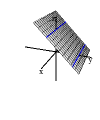
8.
Find the angle in radians between the planes \(2 x + z = 1\) and \(-3 y + z = 1.\)
9.
A store sells CDs at one price and DVDs at another price. The figure below shows the revenue (in dollars) of the music store as a function of the number, \(c\text{,}\) of CDs and the number, \(d\text{,}\) of DVDs that it sells. The values of the revenue are shown on each line.
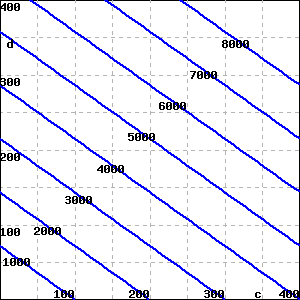
(Hint: for this problem there are many possible ways to estimate the requisite values; you should be able to find information from the figure that allows you to give an answer that is essentially exact.)
\(R\text{,}\) is linear and so we may write it as:
\begin{equation*}
R = (p_1)c + (p_2)d
\end{equation*}
where \(p_1\) is the price of CDs and \(p_2\) is the price of DVDs, in dollars. From the diagram, we can pick two points, such as \(c = 150\text{,}\)\(d=250\) on the contour \(R=5000\text{,}\) and \(c = 250\text{,}\)\(d = 250\) on the contour \(R = 6000\text{.}\) These points give the following system of linear equations:
The vector and parametric forms of a line allow us to easily describe line segments in space.
Let \(P_1 = (1,2,-1)\) and \(P_2 = (-2,1,-2)\text{,}\) and let \(\mathcal{L}\) be the line in \(\R^3\) through \(P_1\) and \(P_2\) as in Activity 9.5.2.
What value of the parameter \(t\) makes \((x(t), y(t), z(t)) = P_1\text{?}\) What value of \(t\) makes \((x(t), y(t), z(t)) = P_2\text{?}\)
What \(t\) values describe the line segment between the points \(P_1\) and \(P_2\text{?}\)
What about the line segment (along the same line) from \((7,4,1)\) to \((-8,-1,-4)\text{?}\)
Now, consider a segment that lies on a different line: parameterize the segment that connects point \(R=(4,-2,7)\) to \(Q=(-11,4,27)\) in such a way that \(t = 0\) corresponds to point \(Q\text{,}\) while \(t = 2\) corresponds to \(R\text{.}\)
11.
This exercise explores key relationships between a pair of lines. Consider the following two lines: one with parametric equations \(x(s) = 4-2s\text{,}\)\(y(s) = -2 + s\text{,}\)\(z(s) = 1 + 3s\text{,}\) and the other being the line through \((-4, 2, 17)\) in the direction \(\vv = \langle -2, 1, 5 \rangle\text{.}\)
Find a direction vector for the first line, which is given in parametric form.
Find parametric equations for the second line, written in terms of the parameter \(t\text{.}\)
Show that the two lines intersect at a single point by finding the values of \(s\) and \(t\) that result in the same point. Then find the point of intersection.
Find the acute angle formed where the two lines intersect, noting that this angle will be given by the acute angle between their respective direction vectors.
Find an equation for the plane that contains both of the lines described in this problem.
12.
This exercise explores key relationships between a pair of planes. Consider the following two planes: one with scalar equation \(4x - 5y + z = -2\text{,}\) and the other which passes through the points \((1,1,1)\text{,}\)\((0,1,-1)\text{,}\) and \((4, 2, -1)\text{.}\)
Find a vector normal to the first plane.
Find a scalar equation for the second plane.
Find the angle between the planes, where the angle between them is defined by the angle between their respective normal vectors.
Find a point that lies on both planes.
Since these two planes do not have parallel normal vectors, the planes must intersect, and thus must intersect in a line. Observe that the line of intersection lies in both planes, and thus the direction vector of the line must be perpendicular to each of the respective normal vectors of the two planes. Find a direction vector for the line of intersection for the two planes.
Determine parametric equations for the line of intersection of the two planes.
13.
In this problem, we explore how we can use what we know about vectors and projections to find the distance from a point to a plane.
Let \(p\) be the plane with equation \(z=-4x+3y+4\text{,}\) and let \(Q = (4,-1,8)\text{.}\)
Show that \(Q\) does not lie in the plane \(p\text{.}\)
Find a normal vector \(\vn\) to the plane \(p\text{.}\)
Find the coordinates of a point \(P\) in \(p\text{.}\)
Find the components of \(\overrightarrow{PQ}\text{.}\) Draw a picture to illustrate the objects found so far.
Explain why \(|\comp_{\vn} \overrightarrow{PQ}|\) gives the distance from the point \(Q\) to the plane \(p\text{.}\) Find this distance.